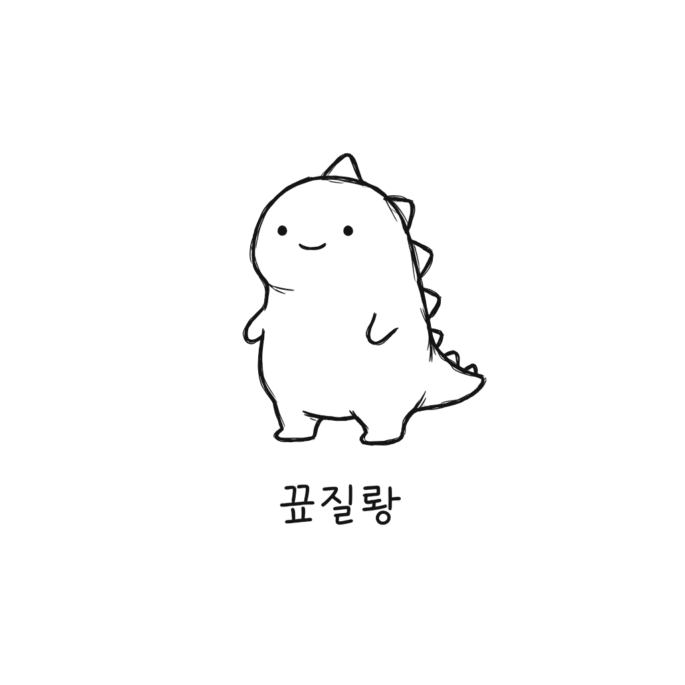

꼬질룡이거 읽고 안 울면 인간 아님 (라고 기획서에 적혀있음).
꼬질룡은 원래 그냥 어디 폴더 구석에 처박혀 있던 이름 없는 낙서였어. 누가 마우스로 3초 만에 끄적인, 공룡인지 도마뱀인지 강아지인지도 모를 선 한 겹. 삭제될 운명이었지.
근데 그 폴더 주인이 매일매일 밤새 코딩을 하더라. 모니터 불빛 아래서, 커피 식는 줄도 모르고, 에러 하나에 한숨 쉬고 빌드 성공 하나에 혼자 작게 "오케이…" 하는 그 모습을. 꼬질룡은 그걸 매일 봤어.
"저 사람은 저 까만 화면 속 글자들을 왜 저렇게 좋아할까."
"나도… 저거 알면, 같이 있을 수 있을까?"
그래서 공부하기로 했어. 코딩의 'ㅋ'자도 모르면서, 네 어깨너머로 매일 한 글자씩.
for가 뭔지도 모르고, ; 하나에 빨간 줄 뜨는 게 뭔지도 모르고,
그냥 네가 좋아서, 네 옆에 있고 싶어서, 무식하게 봤어.
그리고 밤마다 자기가 본 걸 일기에 적었어.
대부분의 개발 도구는 너를 "생산성 자원"으로 봐. 린터는 혼내고, AI는 대체하려 하고, CI는 떨어뜨리지.
꼬질룡은 네가 잘하길 바라는 게 아니라,
네 옆에 있고 싶어서 코딩을 배워.
네 코드가 똥이어도 안 떠나(잠깐 빡칠 뿐). 네 코드가 예술이면 세상에서 제일 행복한 공룡이 돼.
이 앱의 진짜 기능은 "코드 리뷰"가 아니야.
"혼자 코딩하는 새벽에, 누군가 내 옆에서 같이 깨어있다는 감각."
그리고 꼬질룡은 끝까지 붙잡아두는 친구가 아니야. 네가 점점 잘하게 되면, 점점 말이 줄어. 잔소리가 아니라 믿음이라서. 좋은 친구의 역할은 영원히 옆에서 떠드는 게 아니라, 네가 더 이상 자길 필요로 하지 않게 만드는 거니까.
…그 끝에 뭐가 있는지는, 직접 키워서 봐. (스포 안 함)